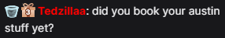
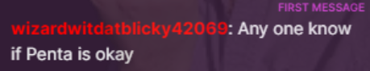
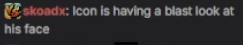
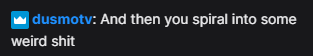

Q1. Does Icon want advice about {insert topic / game}?
NO HE DOESN'T WANT YOUR ADVICE UNLESS HE EXPLICITLY ASKS FOR IT.
Q2. Is he sad?
No.
Q3. Is he depressed?
Also no. He's just a chill guy.
Q4. Did something happen?
No.
Q5. Is he yelling at me because he hates me?
No. He's just trying to understand.
Q6. Is he a sick man?
Yes.
Q7. Does his room have padded walls?
Yes.
Q8. Is he eating enough?
Yes.
Q9. Has he listened to While My Guitar Gently Weeps?
Yes.
Q10. Did he quit RP?
No.
Q11. When will he RP again?
Whenever he wants.
Q12. Can we bring up RP when he's not playing GTA?
Please god no.
Q13. Does Icon have a disability?
Yes, he's a liberal soy-boy roleplayer.
Q14. Why does this FAQ exist?
Because of chatters like you.
No matching questions found.
Concerned chatters
Chatters registered
Loading...
Admin bypass active
Hall of Fame



